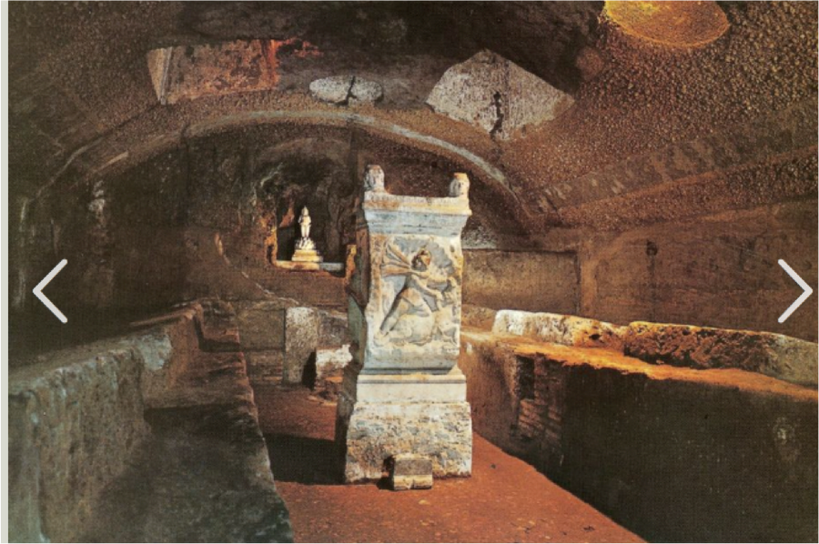

Kapittel 1: Evolusjonen
Lærende organisasjoner – ressurser
Før vi starter reisen mot lærende organisasjoner og lærende systemer, må vi studere hvordan utviklingen av ny kunnskap og nye teknologiske revolusjoner driver fram ny kunnskap, nytt perspektiv på verden og dermed nye organisasjonsformer.
1.1. New Public Management
De store industriselskapene sammen med stat, fylker og kommuner praktiserer ennå en slags amerikansk inspirert variant av såkalt moderne ledelsessystemer. Omfattende KPI-er nøkkeltall, kostbare og kompliserte datasystemer, måle og rapporteringssystemer kombinert med “moderne” HR systemer.
Offentlig sektor har adoptert sin variant av dette. Ofte under betegnelsen New Public Management. I mange kommuner og statlige virksomhetyer suger dette vitalitet og skaperkraft ut av organisasjonen. Leger og sykepleiere bruker tid og krefter på å skrive rapporter og tilfredstille systemet i stedet for omsorg og behandling av pasienter. Dette er direkte uproduktivt og ødeleggende for de nødventige forbedringene og innovasjonene som må komme for å bevare og videreutvikle velferdsstaten vår.
Frederic W. Taylors grunnleggende bok: Shop Management fra 1911.
Det er nok av forskning, kritikk og fordømmelse av hvor skadelig NPM og “markedstilpasning” er. Men for å endre dette trenger vi ikke enkel høyre-venstretenkning. Vi trenger dypere kunnskap. Vi må vi forstå hvorfor det ble sånn. Ved å forstå, ser vi også klarere hvilken omskaping ar organisasjonstenkning vi i dag står midt oppe i. Ved å betrakte verden mer som Darwin betraktet den dynamiske utviklingen i naturen. Det oppstår mange varianter hvor noen tilpasser seg de endringene som skjer bedre enn andre.
Den nåværende dominerende ledelsestenkningne (paradigme) er ikke annet enn etterlevninger etter en industriell og mekanisk tenkning som vokste fram i masseproduksjonen etter den kraftige industrialiseringen i det 19. og 20. århundret. Dette var en del av evolusjonen i ledelsestenkning og ledelsessystemer som primært var nødvendig den gang, men som nå forlengst har gått ut på dato.
Industriell masseproduksjon har skapt fantastiske resultater som for noen tiår siden ville vært umulige. Samtidig har ensidig vekst gått på bekostning av kloden vi lever på. Millioner av mennesker også i den rike del av verden, føler seg mislykket og til overs (det dør flere av selvmord enn alle kriger og kriser til sammen). Vi har nådd et nivå i ekstrem vekst og bunnlinje og aksjeverdifokus som i medisinske termer ville kun ha ett navn – kreft. En av de fremste nytenkerne innen organisasjon, Frederic Laloux sier det slik:
”En annen skygge framkommer når suksess kun er målt i form av penger og anerkjennelse. Når vekst og bunnlinjen alt som teller og når det eneste suksesskriteriet er vi dømt til å oppleve en form for tomhet i våre liv”
Hele boka kan lastes ned i PDF, (klikk på bildet) men den er lagt ut slik at man kan bidra med penger. Husk å donere til Laloux. Det er i god organisasjon 5.0 ånd å bidra etter evne!
En svensk undersøkelse viser at de aller fleste ungdommer ikke ønsker å arbeide i disse gamle hierarkiske systemene. De ønsker å arbeide i organisasjoner som er basert på verdier og et langsiktig og nyttig formål. Og der de kan arbeide med å skape og utvikle seg selv.
Tiden for ekte lærende organisasjoner har kommet.
Darwins oppdagelse av at utviklingen drives av de ulike artenes som er best tilpasning til endring. Slik er det også med menneskenes tenkning og vårt syn på organisasjon.
Kjennetegn på organisasjon 3.0 "moderne ledelse" som ennå er hovedtrenden i verden og i Norge:
- Målene bestemmes sentralt. Ofte med fokus på kortsiktige resultater.
- Krav om lojalitet til målene.
- Vekt på ytre stimuli. Konkurranse og tro på at markede ordner biffen.
- Lønn basert på måloppnåelse
- Dr. Deming startet oppgjøret med taylorismen og
- amerikansk inspirert "moderne ledelse"
«Denne boka er for mennesker som lever under åket av den rådende ledelsesstilen. De store og langvarige tapene på grunn av denne lederstilen har ført til tilbakegang. Mange mennesker forestiller seg at denne ledelsesstilen alltid har eksistert, og er forutbestemt. Egentlig er den en moderne oppfinnelse – et fengsel skapt gjennom hvordan mennesker samhandler i vår tid. Dette rammer alle områder i våre liv – myndigheter, industri, utdanning og helsestell” Han skriver videre:
”Vi har vokst opp i et klima med konkurranse mellom mennesker, team, avdelinger, elever, skoler, universiteter. Økonomer har lært oss at konkurranse vil løse problemene våre. I virkeligheten ser vi nå at konkurransen er destruktiv. Det vi trenger er en ny type ledelse”
1.2 Evolusjonsperspektivet
Frederic Laloux har i boka Reinventing Organizations beskerevet evolusjonen sett med Darwins briller. Hvordan organisasjoner har utviklet seg på grunnlag av ny teknologi og ny kunnskap.
”Hver gang vi som art har endret hvordan vi tenker om verden, har vi utviklet mer virkningsfulle organisasjoner”.
Og videre...
”Organisasjoner som vi kjenner dem i dag, er rett og slett uttrykk for vårt nåværende verdensbilde, vårt nåværende utviklingsstadium. Det har vært andre modeller før og det vil beviselig komme flere”.
1.3. Før organisasjonene - den magiske perioden
1.4 Organisasjon 1.0 "ulveflokken"
De første organisasjonene hadde i følge Laloux noen viktige gjennombrudd
som ledet til store gjennombrudd i utvikling av produktivitet.
Organisasjon 1.0 i dag
Mafia
Gategjenger.
Stammemilits
Gjennombrudd:
- Arbeidsdeling
- Ordre autoritet
1.5 Organisasjon 2.0 for landbruk og et nytt livssyn
I Messopotamia (Irak) oppsto de første jordbrukssamfunnene og gradvis utvkles også et nytt organisasjonsparadigme. Man utviklet et mer langsiktig og forustígbart paradigme. Planlegging av avlinger, såing og odling av jorda år for år.
Virksomheter som domineres av dette paradigmet i vår tid:
- Den katolske kirken
- Militæret
- Styresmakter (regjering)
- Mange skoler
- Formelle roller
- Prosesskunnskap
1.6 Organisasjon 3.0 - for industri, handel og innovasjon
Når moderne industriell masseproduksjon vokste fram, var de føydale strukturene og maktsystemene et "fengsel". Handel og industriborgerskapet krevde frihet, likhet, broderskap og et nytt organisasjonsparadigme vokste fram gjennom evolusjonen. Dette var kjennetegnet av
meritokrati (ikke arvelige titler, hvem som helst kan bli hva som helst)
Innovasjon - store teknologiske gjennombrudd
Langsiktig forutsigbarhet
Organisasjon 3.0 i dag:
- Multinasjonale industri og handelsselskaper
1.7 Framveksten av nye organisasjonsformer
Organisasjon 4.0 og 5.0 og hva er organisasjon 5.0?
1.8 Oppbruddet fra organisasjon 3.0 begynner
Frederic Winslow Taylor regnes som grunnlaggeren av moderne ledelse. Hans bok "Shop Management"
Videoen viser noen av grunnprinsippene i "vitenskapelig ledelse"
New Public Management: Wikipedia
Ressurser om New Public Management. Hood og Dixon
"Higher Cost and more Complaints"
FREDERIC LALOUX har skrevet boka Reinventing Organizations
I denne videoen forklarer Laloux evolusjonsperspektivet.
Laloux har laget en presentasjon som også kan vises som pptx/pdf. Den ligger HER
St.Clemente i Roma. Lag på lag oppå det gamle.
Teknologisk nivå i følge Peter Marsh
Produksjon av ett og ett produkt til spesiell bruk. Ingen standardisering eller utskiftbare deler.
KUNNSKAP spres gjennom munn til munn, fortellinger, myter symboler. Før bøkene.
Organisasjonsparadigme 2.0 og utvikling av produktivkreftene.
Neste teknologiske gjennonrudd kom i følge Peter Marsh med produksjon av standardiserte utskiftbare deler. For å bygge et skip utviklet man bolter og moduler som kunne byttes ut. Men ennå var dette kun til spesielt bruk. Masseproduksjonen var ennå ikke kommet.
Kunnskap spres gjennom bøker, brev som kan lagre store mengder kunnskap og frakte dem rundt med datidens "apostlenes hester", hester og båt.
Denne boka er en grunnleggende innføring i systemtenkning ala Deming.
Den er fundamental i studiet Lærende organisasjon.

Videoer

Klar til å bygge en lærende organisasjon?
Fortell oss hvor dere står i dag, så foreslår vi neste steg for teamet ditt.
eller kontakt oss direkte: gabi@learnorg.global · +47 48 28 70 00